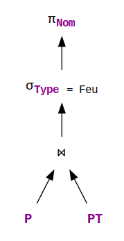
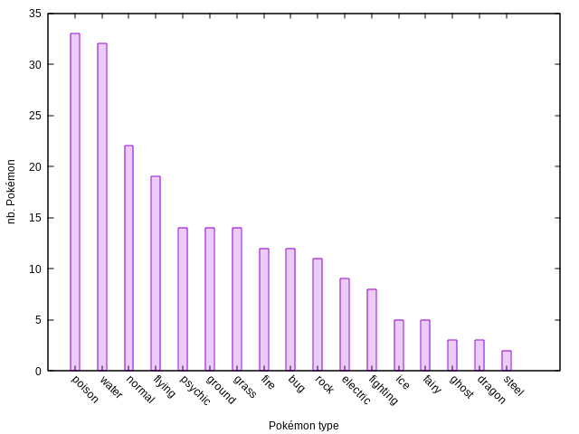
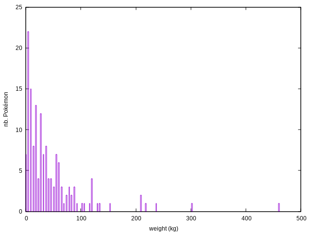

SQL signifie
Structured Query Language
SQL est un langage déclaratif de manipulation de données relationnelles.
CREATE TABLE table(attribut(s)) ;
INSERT INTO table VALUES tuple ;
| Rang | Nom | Taille | Poids |
|---|---|---|---|
| #001 | Bulbizarre | 0.7m | 6.9kg |
| #004 | Salamèche | 0.6m | 8.5kg |
| #007 | Carapuce | 0.5m | 9.0kg |
| #025 | Pikachu | 0.4m | 6.0kg |
| #052 | Miaouss | 0.4m | 4.2kg |
| Rang | Type |
|---|---|
| #001 | Plante |
| #001 | Poison |
| #004 | Feu |
| #007 | Eau |
| #025 | Électrik |
SELECT attribut(s)
FROM table(s)
WHERE condition(s) ;
(Q1) Quel est le nom des Pokémon de type feu ?
SELECT Nom
FROM Pokémon AS P,
PokémonType AS PT
WHERE P.Rang = PT.Rang AND
Type = Feu ;
Quels problèmes pratiques peuvent apparaître à mesure que la taille des tables augmente ?
À ces problèmes pratiques peut être donnée une réponse théorique.
Le fondement théorique d'SQL est le modèle relationnel.
Une table (SQL) équivaut à une relation dans le modèle relationnel.
Une relation R est un ensemble de n-uplet ou tuples {t, t', …} avec
t = (t1, t2, …, tn)
t' = (t'1, t'2, …, t'n)
…
Pokémon = {
(#001, Bulbizarre, 0.7, 6.9),
(#004, Salamèche, 0.6, 8.5),
(#007, Carapuce, 0.5, 9.0),
(#025, Pikachu, 0.4, 6.0),
(#052, Miaouss, 0.4, 4.2)
}
Les valeurs d'un tuple peuvent être indexées
Si l'on suppose que l'ensemble des attributs est strictement ordonné, les deux représentations sont équivalentes.
On peut donc écrire alternativement
et on désigne l'ensemble {A1, …, An} comme le type de t, noté type(t).
Si dans une relation R, tout t ∈ R a le même type S = {A1, …, An}, on dit alors que R est une instance du schéma S.
La relation Pokémon est une instance du schéma
SPokémon = {Rang, Nom, Taille, Poids}
Une base de données relationnelles est un ensemble de relations typées (chacune instance d'un schéma donné).
Quelle cas particulier de relation étudie-t-on depuis le collège ?
Celui de la fonction (mathématique).
La fonction F : x ↦ F(x)
On change alors de notation, pour écrire F(x) = y1 = y2.
La contrainte d'unicité sur l'application de F est appelée « dépendance fonctionnelle ».
Lorsqu'un ensemble d'attributs Y dépend fonctionnellement d'un autre ensemble X, on note
X → Y
Un schéma de base de données est toujours soumis à au moins une dépendance fonctionnelle : celle de clé primaire.
Une clé (primaire) est un ensemble minimal d'attributs desquels dépendent fonctionnellement tous les attributs d'un schéma.
Cet ensemble d'attributs n'est pas nécessairement unique.
Le rang d'un Pokémon détermine son nom, sa taille et son poids.
Rang → {Nom, Taille, Poids}
Le nom du Pokémon aussi.
Nom → {Rang, Taille, Poids}
Les dépendances fonctionnelles ont certaines propriétés logiques :
Une dépendance fonctionnelle X → Y est canonique si Y est un attribut unique A.
La suite du cours suppose une représentation canonique des dépendances.
Une base de données relationnelles est un ensemble de relations typées et satisfaisant une ou plusieurs dépendances fonctionnelles.
Les relations peuvent aussi satisfaire des contraintes dites d'intégrité.
Quelle dépendance fonctionnelle la base de données ci-dessous viole-t-elle ?
| Rang | Nom | Taille | Poids | Type |
|---|---|---|---|---|
| #001 | Bulbizarre | 0.7m | 6.9kg | Plante |
| #001 | Bulbizarre | 0.7m | 6.8kg | Poison |
| #004 | Salamèche | 0.6m | 8.5kg | Feu |
| #007 | Carapuce | 0.5m | 9.0kg | Eau |
| #025 | Pikachu | 0.4m | 6.0kg | Électrik |
| #052 | Miaouss | 0.4m | 4.2kg |
Bulbizarre (#001) a deux valeurs de poids (6.9kg et 6.8kg).
Les données violent donc la dépendance fonctionnelle
Rang → Poids
Vérifier la satisfaction de dépendances fonctionnelles dans une base de données est peu coûteux si son schéma est en forme normale.
Une forme normale basée sur les dépendances fonctionnelles garantit l'absence à la fois d'incohérence et de redondance.
Il existe plusieurs formes normales imbriquées l'une dans l'autre :
Un schéma relationnel est en 1NF si tous les attributs sont indécomposables (ont des valeurs atomiques).
Un attribut A est non-clé s'il n'apparaît dans aucune des clés potentielles du schéma de relation.
Taille et Poids sont non-clés.
Une dépendance fonctionnelle X → Y est élémentaire s'il n'existe pas de X' ⊂ X tel que X' → Y.
Un attribut A est pleinement dépendant d'une clé K si K → A est élémentaire.
Type
ne dépend pleinement que de
{Rang, Type}.
Un schéma relationnel est en 2NF s'il est en 1NF et si tous les attributs non-clés sont pleinement dépendants de toutes les clés.
Le schéma ci-dessous n'est pas en 2NF. Pourquoi ?
SPJoinPT = {
Rang,
Nom,
Taille,
Poids,
Type
}
Taille et Poids
ne sont pas pleinement dépendants de la clé potentielle
{Rang, Type}.
Un attribut A dépend transitivement d'une clé K s'il existe X tel que
Sinon, A dépend directement de K.
Un schéma relationnel est en 3NF s'il est en 2NF et si tous les attributs non-clés sont directement dépendants de toutes les clés.
Le schéma ci-dessous n'est pas en 3NF. Pourquoi ?
SP2 = {
Rang,
Nom,
Taille,
Poids,
PoidsLourd
}
PoidsLourd
dépend transitivement de
Rang
car
Une dépendance fonctionnelle X → Y est triviale si Y ⊆ X.
Un schéma relationnel est en BCNF s'il est en 3NF et si, pour toute dépendance non-triviale X → A, X contient une clé.
Formellement, une algèbre (ou structure algébrique) est un ensemble de valeurs et d'opérations sur ces valeurs.
Les algèbres classiques sont
(ℤ, {+, ×}) et (ℝ, {+, ×}).
L'algèbre sur les entiers relatifs est un anneau, celle sur les réels est un corps commutatif.
Quels sont les principaux opérateurs algébriques sur l'ensemble des relations (typées) ?
Les opérateurs relationnels de base sont:
La sélection σA=a(R) d'une relation R est le sous-ensemble de R
{t | t ∈ R, t(A) = a}
En SQL, d'autres conditions sont autorisées au-delà de l'égalité.
La projection π{A1,…,Ak}(R) d'une relation R sur les attributs A1, …, Ak est l'ensemble
{(t(A1), …, t(Ak)) | t ∈ R}
En SQL, π s'exprime avec le mot-clé SELECT (à ne pas confondre avec l'opérateur σ de sélection…)
Pour définir la jointure, on introduit la notation t[S] pour désigner un tuple t' tel que
t[S] est le tuple {t'} = πS({t})
La jointure naturelle R1 ⋈ R2 de deux relations R1, R2 est l'ensemble
{
t |
type(t) = SR1 ∪ SR2,
t[SR1] ∈ R1, t[SR2] ∈ R2
}
Le renommage 𝛿F(R) d'une relation R par une fonction de renommage F est la relation
{
t' |
t'(F(A)) = t(A) pour t ∈ R, A ∈ SR
}
Une requête SQL correspond à une opération algébrique sur une ou plusieurs relations.
(Q1) Quel est le nom des Pokémon de type feu ?
πNom(σType = Feu(P ⋈ PT))
On utilise une notation en arbre pour représenter les requêtes.
Une requête peut être optimisée grâce aux identités algébriques des opérateurs.
| σA=a(σA'=a'(Q)) | ↔ | σA=a,A'=a'(Q) | |
| σA=a(πS(Q)) | ↔ | πS(σA=a(Q)) | si A ∉ S |
| σA=a(Q1 ⋈ Q2) | → | σA=a(Q1) ⋈ Q2 | si A ∉ SQ2 |
| πS(Q1 ⋈ Q2) | → | πS(Q1) ⋈ Q2 | si S ∩ SQ2 = ∅ |
| Q1 ⋈ Q2 | ↔ | Q2 ⋈ Q1 |
Parmi des requêtes équivalentes, certaines nécessitent de parcourir moins de tuples que d'autres.
Une heuristique simple pour optimiser des requêtes est de « faire descendre » les opérations les plus simples dans l'arbre de requête (sélections, puis projections).
| Opération | Complexité |
|---|---|
| σ | O(n) |
| π | O(n.log2(n)) |
| ⋈ | O(n1.log2(n1) + n2.log2(n2)) |
La complexité de la jointure est donnée pour l'algorithme sort-merge. Elle peut être améliorée avec des index.
Parfois, il est préférable d'exécuter une jointure avant une sélection.
C'est le cas pour la requête suivante :
(Q2) Quels sont les Pokémon de type feu pesant moins de 100 kg ?
D'autres méthodes de réécriture se basent sur des statistiques pré-calculées sur la base de données.
Par exemple, la sélectivité de la condition PT.Type = Feu est bien supérieure à celle de P.Poids < 100kg.
 Les moteurs de requêtes ont généralement la stratégie suivante :
Le plan d'évaluation final d'une requête peut aussi fusionner certaines opérations pour minimiser les accès mémoires.
Par exemple, lors de la matérialisation d'une jointure, les sélections et projections en amont (dans l'arbre de requête) peuvent être exécutées en même temps.
Une requête peut aussi être optimisée grâce à des index sur les relations.
| Type d'index | Complexité |
|---|---|
| table de hachage | recherche d'élément en O(1) |
| B-arbre | recherche d'élément en O(log2(n)) |
Par défaut, les gestionnaires de base de données créent un index par table de hachage pour chaque clé primaire.
Pourquoi est-ce important ?
La jointure par clé primaire passe en O(n2) avec un index.